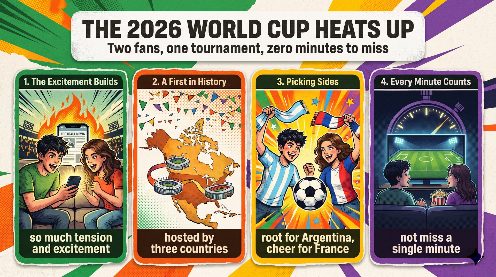

世界盃升溫，球迷之間也出現爭論：48 隊的賽制，真的比之前的 32 隊更好嗎？
causing tension among fans支持者認為場次與機會變多，新秀也能發光；三國合辦分攤成本，讓這樣的規模成為可能。
let unexpected teams shine批評者認為競賽品質可能下降：強隊早期面對弱旅會少了刺激，比賽太多也會讓球員太累。
lower the quality of the games作者認為利大於弊，因為運動應給每個人追夢的機會；新賽制是否保留，要看實際成效。
the benefits outweigh the problemsone question (S) + is causing (V) + tension (O)；As 子句表時間；冒號後是問題內容。
cause tension among + 人；48-team 複合形容詞 team 用單數；format 賽制。
As the 2026 World Cup heats up,（As 時間子句）one question is causing tension（主幹）among fans:（介系詞片語）is a 48-team tournament better than the previous 32-team format?（冒號後問句）語塊 1（隨著賽事升溫）➔ 語塊 2 主語（有個問題）➔ 語塊 3 超車（在球迷之間）➔ 語塊 2 動詞（引發爭論）➔ 語塊 4（48 隊真的比 32 隊好嗎）
As 子句先翻，然後把 among 往前搬。
a five-star hotel、a two-hour movie：連字號複合形容詞名詞用單數。one question is causing tension among N: ...?，立刻點出爭議。Supporters (S) + argue (V) + that more teams mean more matches and more chances ... (O)。
argue that＝主張；不是「爭吵」；mean + N；compete 用原形接 to。
Supporters argue that（主幹）more teams mean more matches（that 子句（前半））and more chances for different countries to compete.（that 子句（後半））語塊 1（支持者主張）➔ 語塊 2（隊伍增加代表場次變多）➔ 語塊 3 調序（不同國家也有更多參賽機會）
這句順翻。
argue that＝claim that；argue with + 人 才是爭吵。Supporters argue that ...，是論說文最穩定的起手式。Not only + does (助動詞) + this (S) + let (V) + unexpected teams shine，but it (S) + also gives (V) + young players (IO) + a chance (DO)。
let + O + 原形 V；give + 人 + a chance to V；Not only 句首要接助動詞。
Not only does this let unexpected teams shine,（Not only 倒裝句）but it also gives young players a chance（but also 子句）to have their moment（不定詞）on the international stage.（地點片語）語塊 1（這不僅讓爆冷門的隊伍大放異彩）➔ 語塊 2（也讓年輕球員有機會）➔ 語塊 4 超車（在國際賽場上）➔ 語塊 3（風光一回）
這句倒裝只是英文語序，中文還是把「這」放最前面。
Not only + 助動詞 + S + V, but S + also + V。hosting the competition together (S) + allows (V) + three countries (O) + to share the costs；, which 子句評論。
allow + O + to V；動名詞主詞視為單數（allows）；make + O + possible。
Moreover,（轉承語）hosting the competition together（動名詞主詞）allows three countries to share the costs,（動詞＋受詞＋to V）which makes a tournament of this size possible.（, which 子句）語塊 1（此外）➔ 語塊 2（聯合主辦賽事）➔ 語塊 3（讓三個國家能分攤成本）➔ 語塊 4 調序（這種規模的賽事才得以舉行）
Moreover 先翻，主詞用 V-ing 開頭，中文照翻。
allow／permit／enable + O + to V。Moreover 是書面語，對應課文口語的 Plus。Moreover, ... 接在第一個論點後面。Critics (S) + believe (V) + that a larger competition may lower the quality of the games (O)；however 插入。
lower 當動詞「降低」；however 不能連接子句；critics 指「批評者」。
Critics, however,（主詞＋插入副詞）believe that（動詞＋that）a larger competition may lower（that 子句）the quality of the games.（受詞）語塊 1 超車（然而，批評者）➔ 語塊 2（認為）➔ 語塊 3（賽事擴大可能會降低）➔ 語塊 4（比賽品質）
換到反方，先翻轉折。
lower（降低）反義 raise。critic 批評者；critical 批判的。Critics, however, believe that ...，一句就完成轉折。They (S) + point out (V) + that teams ... may face ... (O)；, which 子句評論。
point out that；much＋比較級；opponent（對手）；reduce（減少）。
They point out that（主幹）teams with a strong track record（主詞＋with 片語）may face much weaker opponents（動詞＋受詞）in early matches,（時間片語）which could reduce the excitement.（, which 子句）語塊 1（他們指出）➔ 語塊 2 超車（戰績亮眼的隊伍）➔ 語塊 4 超車（在前幾場比賽）➔ 語塊 3（可能碰上弱很多的對手）➔ 語塊 5（這可能會少了刺激感）
主句順翻，that 子句要動順序。
point out that＝note that；opponent 對手、反對者。..., which could reduce ...，比空講壞處更有力。They (S) + also worry (V) + that players may get too tired to do well (O)；if 子句表條件。
too + adj. + to V；do well；there are so many games 用複數。
They also worry that（主幹）players may get too tired to do well（that 子句（too ... to V））if there are so many games.（if 條件子句）語塊 1（他們也擔心）➔ 語塊 3 超車（如果比賽這麼多）➔ 語塊 2（球員可能累到無法好好發揮）
這句因果語序要翻轉。
too ... to V；so ... that。worry that＝be worried that。They also worry that ... 串第二個論點，段落更有層次。the benefits (S) + outweigh (V) + the problems (O)；because 子句說明原因。
outweigh（超過，及物）；In my opinion 後面不加 I think；give＋人＋a chance。
In my opinion,（立場片語）the benefits outweigh the problems（主幹）because sports should give everyone a chance to dream.（because 子句）語塊 1（我認為）➔ 語塊 2（好處大於問題）➔ 語塊 3（因為運動應該讓每個人都有機會追夢）
結論句順翻。
outweigh＝be greater than。In my opinion＝I believe that，兩者擇一。The benefits outweigh the problems because ...，議論文可直接套用。how the new format plays out (S) + will decide (V) + whether it should be kept (O)；Either way 是副詞片語。
whether 不能換成 if 放句首；be kept 被動。
Either way,（副詞片語）how the new format plays out（how 主詞子句）will decide（動詞）whether it should be kept.（whether 受詞子句）語塊 1（不管怎樣）➔ 語塊 2（新賽制的實際成效）➔ 語塊 3（將決定）➔ 語塊 4（這個賽制是否該保留）
片語先翻，主詞子句用名詞帶過。
whether 可當主詞、受詞、補語；if 主要當受詞。Either way, how ... will decide ...，承認不確定性讓論證更可信。fans (S) + can simply root for (V) + their favorite teams (O) and enjoy every minute of the games。
root for；For now（目前）；every 接單數 minute。
For now,（時間片語）fans can simply root for their favorite teams（主幹）and enjoy every minute of the games.（and 動詞片語）語塊 1（至於現在）➔ 語塊 2（球迷只要支持自己最愛的隊伍）➔ 語塊 3（享受每場比賽的每一分鐘）
這句順翻，結尾收得輕鬆。
for now＝for the time being。every + 單數 N。For now, ...。1. 請選出最適合填入 (1) 的字：
argue that＋完整句。2. 請選出最適合填入 (2) 的字：
3. 請選出最適合填入 (3) 的字：
4. 請選出最適合填入 (4) 的字：
too + adj. + to V。5. 請選出最適合填入 (5) 的字：
outweigh：超過、大於。6. The school is thinking of changing the ________ of the sports day; each class would play two matches instead of one.
format：形式、賽制。7. The new subway will ________ traffic in the city center and help people save time.
reduce traffic：減少交通流量。8. Taiwan's young players defeated a strong ________ in the final, and fans were thrilled.
opponent：對手。9. Thirty schools will ________ in the debate contest this year.
compete in：參賽。10. 下列哪一句文法正確？
Not only + 助動詞 + S + 原形 V。11. 「批評者指出，這可能會降低比賽品質。」最佳英譯是：
point out that；may＋原形；lower 動詞。12. 下列哪一句文法正確？
13. What is the main question of the essay?
14. Which of the following is an argument made by critics?
15. What is the writer's own position?